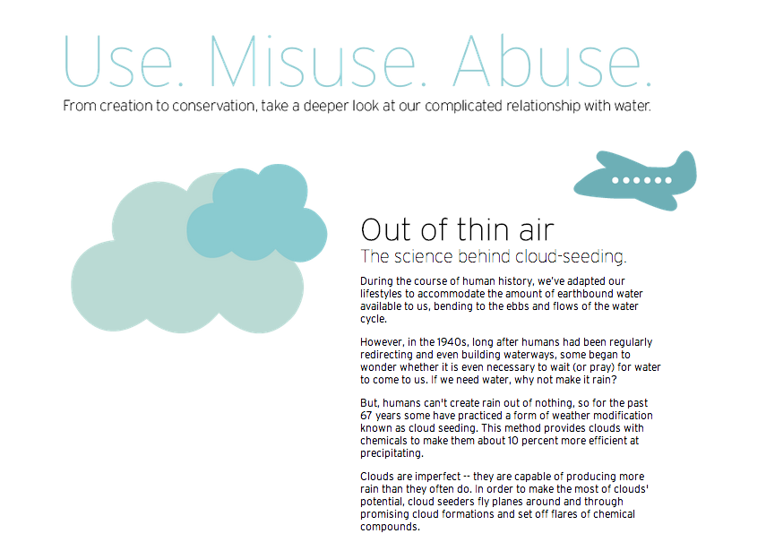
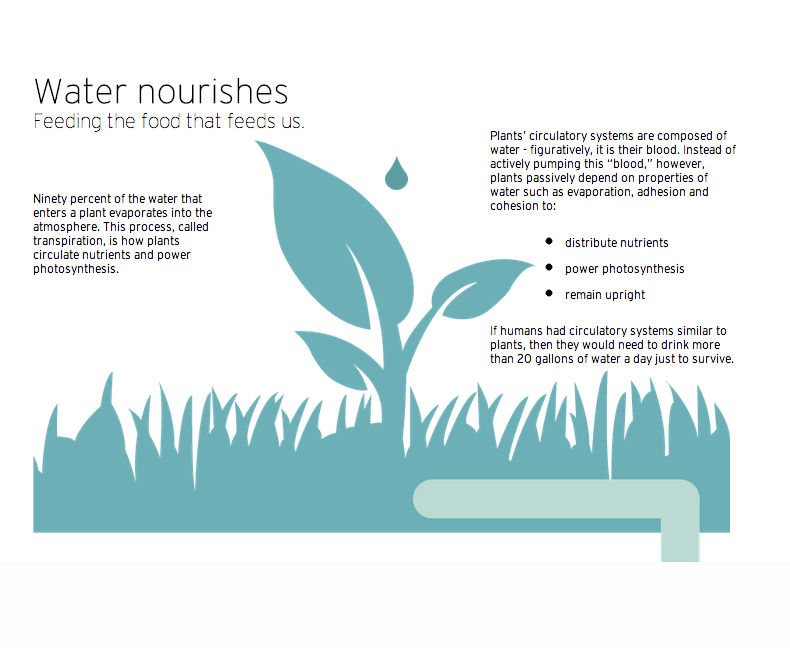

Powering A Nation
An interactive web story about our relationship with water
Powering a Nation is an award-winning project that brings together students from different concentrations in the UNC Journalism School to create interactive storytelling content for the Powering a Nation website to spread awareness and understanding of the many energy issues America faces.
Last year's theme was 100 Gallons, a look at an individual's daily interaction with water resources. During Spring 2013, I worked as a web designer and programmer on a 12-person team to develop additional content for the 100 Gallons site, which was created the previous summer.
Click here to see my finished project
Note: The programmers who began this project did not provide a framework for Internet Explorer compatibility. All links are best viewed on Google Chrome in a large browser window.

Development Process
- Familiarize ourselves with water conservation issues and our specific project, 100 Gallons.
- Look for information gaps in the existing site content and brainstorm new topics.
- Conduct external research to flesh out our most intriguing ideas.
As an interaction designer, I was focused on the storytelling format and experience.
Here is some of my early inspiration for an engaging "scrolling" story: - http://vitamintalent.com/ux-statistic
- http://www.guardian.co.uk/world/interactive/2012/nov/06/america-elect-graphic-novel
- http://joelb.me/scrollpath/
- http://johnpolacek.github.com/scrollorama/
- http://lostworldsfairs.com/atlantis/
- The team agreed to build an interactive page showing the life of a water droplet in the 21st century. The page would feature a parallax animation experience that we hoped would engage the reader in the page. 
- We delegated the work between researchers, writers, videographers, graphic designers, interaction designers / programmers, and the marketing team.
- I used my research and programming background to lead the team in planning a storyboard that would be fluid and functional as a digital experience. It was challenging to integrate everyone's separate ideas into a single seamless web page. You can view our sketches here.
- I worked with two other interaction designers to program the page. One was in charge of the CSS styles for the page. One worked on the accordion at the bottom and the integration of our page into the existing site. I was responsible for the structure of the page itself, meaning the HTML and JavaScript that would produce the parallax effect we wanted to achieve. I loved working on this part of the project because I was able to play such an integral role in the flow of the page; every piece of content went through my hands. I also loved working closely with the designers. I provided them with my sketches and specs for the images we needed and they turned them into a reality.
{kind=link}
The finished project can be found at the last dot beneath the 100 Gallons concept video or here: Use. Misuse. Abuse. The site was nominated for a Webby this year. My biggest regret was that we didn't have time or resources to conduct user research throughout our brainstorming and production phases.
